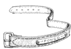

|
|
Le BibliothécaireThe Librarian | |
Suite à un accident de magie dans la bibliothèque de l'université invisible, il fut transformé en orang-outan. Les mages ont essayé de lui rendre son apparence, mais il a fait comprendre qu'il préférait rester sous cette forme. De toute façon plus personne ne se rappelle a quoi il pouvais bien ressemblé avant d'être métamorphosé en s... heu ... anthropoïde. D'après la rumeur, le bibliothécaire était autrefois le docteur Horace Chapelotte, L. ès Thau, D. M. Très susceptible il ne faut surtout pas le traiter de singe sous peine de se retrouver avec 150 kg de muscle sur les épaules en train de vous dévisser la tête. Extérieurement, il a le physique sac-de-caoutchouc-rempli-d'eau-à-poil-roux d'un orang-outan adulte. Il vit dans un nid entouré de livres dans un débarras sous le bureau au milieu de la bibliothèque. Bien que vivant la plus grande partie de la journée "à poil", si j'ose dire, il possède une vieille robe verte qu'il porte quand il sort du bain ou que la pudeur l'exige. Il est bien évidement partisan de la lecture en général mais ne peut supporter que très difficilement tout ce qui ressemble de près ou de loin à un lecteur potentiel. Celui-ci susceptible de sortir sans arrêt les livres de leurs rayonnages et d'user les mots irrémédiablement en les lisant. Il cultive une grande sympathie pour les gens qui aiment et respectent les livres, et le meilleur moyen d'aimer et respecter les livres, a son avis, c'est de les laisser sur les étagères, à la place que leur a attribuée Dame Nature. Enfin, le soir, on peut souvent le trouver en train de déguster tranquillement une peinte ainsi que, si le patron ne fait pas attention, tous les bols de cacahuètes du TAMBOUR Rafistolé, lieu d'ailleurs où sa poigne de fer et sa manie de se balancer aux poutres ajoutent autant de piquant aux bagarres du bistro. Vous trouverez le Bibliothécaire Orang-Outan/Homme dans
: Le Huitième Sortilège,
La Huitième Fille, Mortimer,
Sourcellerie, Au
Guet !, |